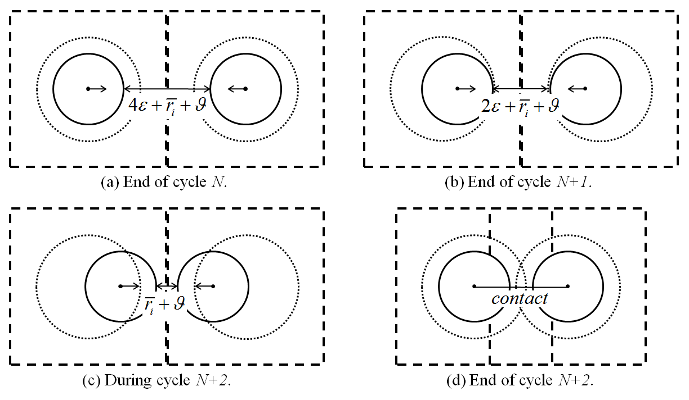

35.0 - 创建／删除接触
接触可以形成于分属不同体的两个片体之间，参与某个接触的片体称为接触端。在一系列循环的首次循环之前，（在数据结构初始化期间，如 此处（here） 所示）已在片体之间创建了所有接触。这是必要的，因为若没有接触，就无法计算系统的有效刚度，这意味着无法计算稳定的时步。
对累积运动超过其容差范围判据而被判定为脏（dirty）的片体，触发接触更新。这类片体已在循环点 30.0 期间于单元空间中重新映射（详情请参阅 此处（here））。当片体的 共形表面（conformal surfaces） 重叠时创建接触，当共形表面不再重叠时删除接触。接触更新仅对脏片体发生。请注意，使用 contact.activate FISH 函数将接触的状态设置为始终活动，即可确保接触永不被删除。
当把时步确定模式设置为自动或缩放时（参见 模型力学时步（model mechanical timestep） 命令），时步受到限制，使任一片体相对于其上一位置的平移量最多为 \(\varepsilon\)。在该约束得到强制执行的前提下，可以保证接触在出现力/力矩的循环之前即已创建。下图以图形方式说明了这一点。假设两个相同的球颗粒（几何形状和 \(\varepsilon\) 值均相同）处于这样一种构型：在循环 \(N\) 结束时，它们的范围无限接近（相距 \(\vartheta\)）。此外，假设两个球颗粒的速度 \(\left | \mathbf{v} \right | = (\varepsilon-\vartheta) / \Delta t\) 相向指向，其中 \(\Delta t\) 为循环 \(N+1\) 和 \(N+2\) 期间的时步。在循环 \(N+1\) 结束时，范围保持不变，因为两个球颗粒的平移量均未达到 \(\varepsilon\)（相对于循环 \(N\) 时的位置）。在循环 \(N+2\) 期间更新球颗粒的位置，使两个球颗粒彼此相距 \(\overline{r}_i + \vartheta\)。随后更新片体范围，接触便会在可能产生力/力矩的循环之前创建。


图 1：相同片体以固定速度相向运动的平移限制逻辑演示。当片体位移超过 \(\varepsilon\)（细虚线）时，单元范围（虚线）随之更新。
创建时，一个 接触模型（contact model） 会依据 接触模型分配表（CMAT）（Contact Model Assignment Table (CMAT)） 的当前配置分配给每个接触。如“模型组件（Model Components）”一节所述，接触几何在创建时即被确定。
| 这些内容对您有帮助吗？… 版权与免责声明 |
FLAC3D © 2019, Itasca | 原文更新于 2020 年 10 月 8 日 |